WEEK 7 (08 March 2017)
[Computer - Controlled Machining]
This week the computer controlled machining assignment is to Make Something big, and learn how to use the CNC machine (Big Milling Machine) in our Fab Lab we have a Ouplan 1510 CNC Router .
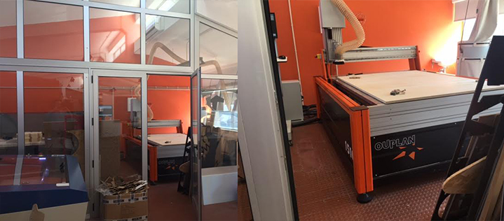
This week I wanted to make two projects, first I wanted to build two houses for my two Cats ( Siza and Zaha Hadid) then I wanted to recycle an Electric cable coil and I turned it into a house and toy for my cats, (Using Valchromat and Cork)
Project C.A.T'S HOME
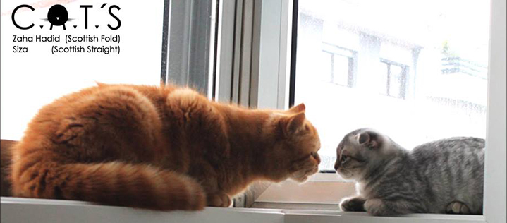
Recycling an Electric Cable Coil
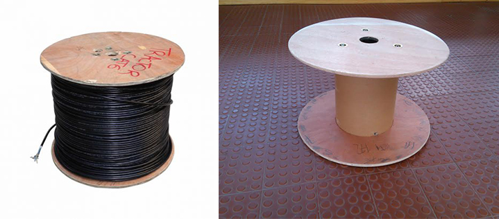
What I will need to recycle the piece:
- CNC Machine;
- Laser Cut Machine;
- Cork;
- Rope;
- White Wood MDF;
- Orange Valchromat;
- Wood Glue;
- White paint;
- Velvet Rug;
Step 1: Disassemble all parts of the object - Step 2: I drew the pieces that will be cut on the CNC Router in Ilustrator - Step3: I drew the pieces that will be cut on the Laser Cut in Ilustrator - Step4: I glued the white mdf piece inside the Cat house - Step5: I painted the pieces with white paint
Drawing using Ilustrator
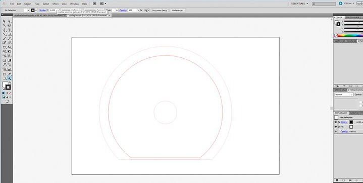
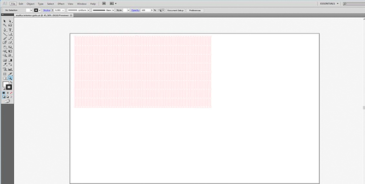
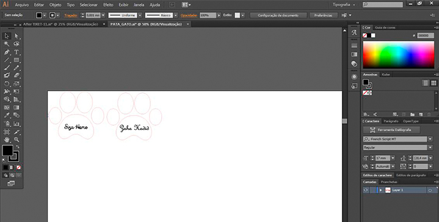
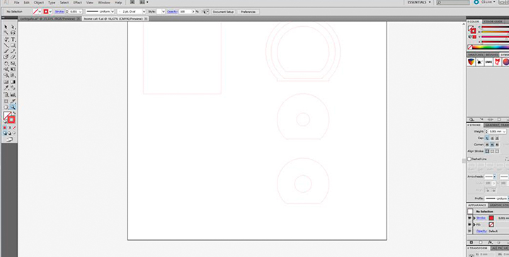
Cutting the drawings in laser cut, and starting to assemble
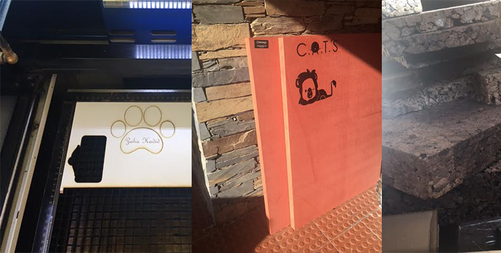
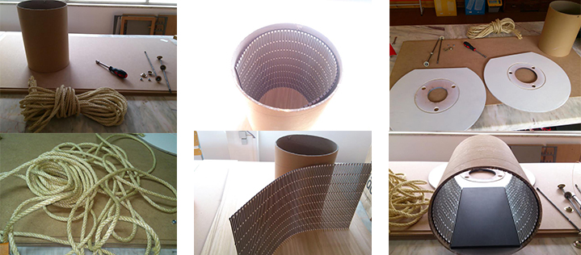
Using CNC ROUTER to cut the Cork and the orange Valchromat
Fist step: To use the CNC Router we must open the drawings made on the illustrator in the ArtCam, go to "file" and "import" the vector file (AÍ), after that go to "vector menu" and align the drawing in the center of the Artcam page, after that go to "Routes" and open the "menu Machining", afterwards we must choose what we are going to Cut and thinning, and then we must choose the tools...
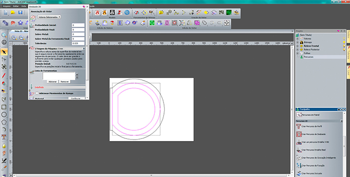
(Choosing de tools, for milling MDF (Valchromat) I chose a 4 mm drill bit)
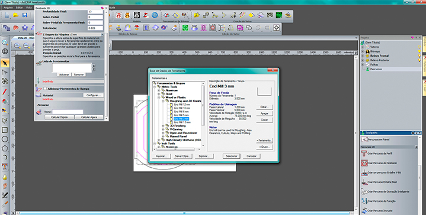
Then I had to change the settings because the Valchromat is a very hard material, and because of that I had to choose the cut depth 1.6mm, and the spacing 2.6mm because we have a 4mm drill bit to build the path.
(To cut the cork I changed to a 8mm drill bit, and in the cut we can increase the drilling speed because we are dealing with a softer material).
Second step: I defined the roughing, and then the inner cut, and finally the outer cut...
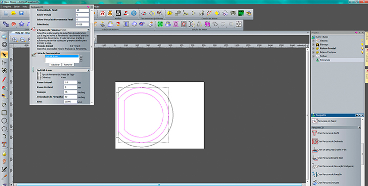
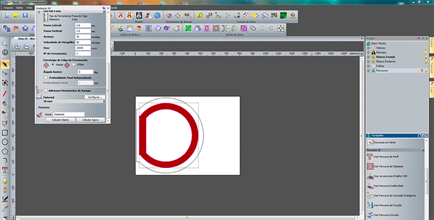
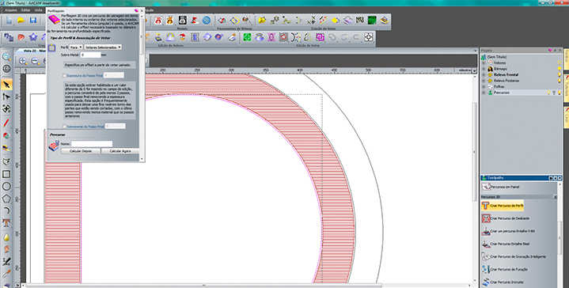
After that I had to define the Z at 8mm in order not to damage the tool, and at the same time the piece, I also defined 4 bridges, (the bridges must be made so that the material at the end of cut does not come loose).
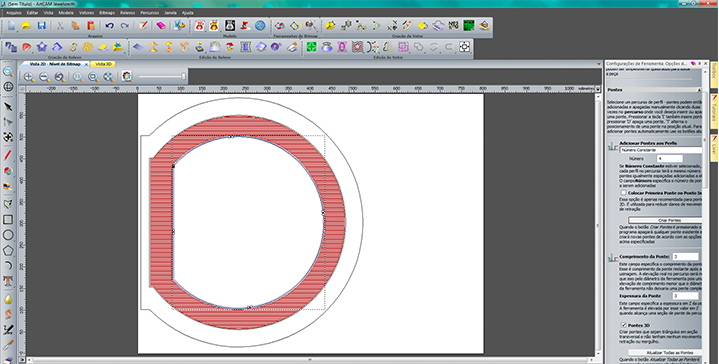
Before Cutting and thinning, first we must choose what to do, Cut or thinning? I always choose thinning and then cut the the interior of the piece, only after I cut the exterior of the piece and the main reason is: to avoid undesaired movements of the piece which may lead to a damage of the work/machine.
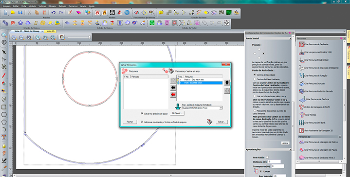
Posteriorly I saved the previous work on the oplan Machine, and opened the File.
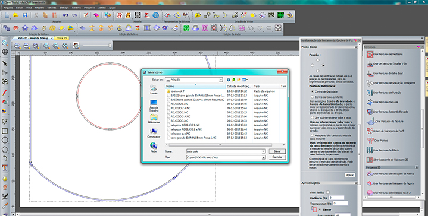
Working with CNC Router:
- First step: Put the right drill bit in the machine, and secure the valchromat plate in the machine.
- Second step: Define the X,Y and Z in the "Jog" after that go to "G54" and press OK.
- Final step: Go to the "Origin" command ( Before pressing play, control the speed of the drill bit, set the speed to about 50%, and then increase speed progressively as long as the CNC is cutting ( Singing (: ) well... MAKE PLAY
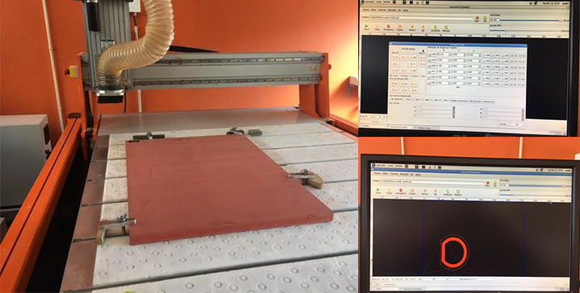
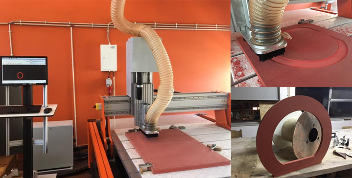
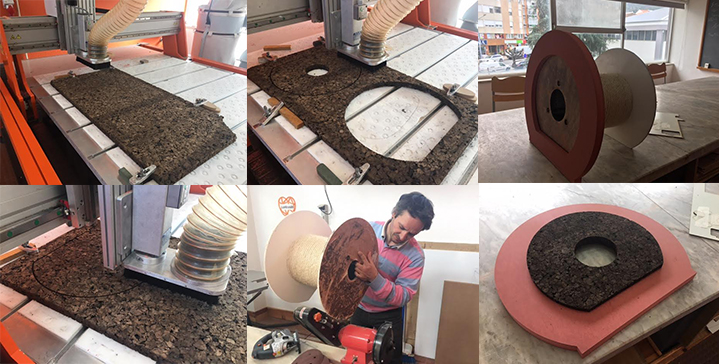
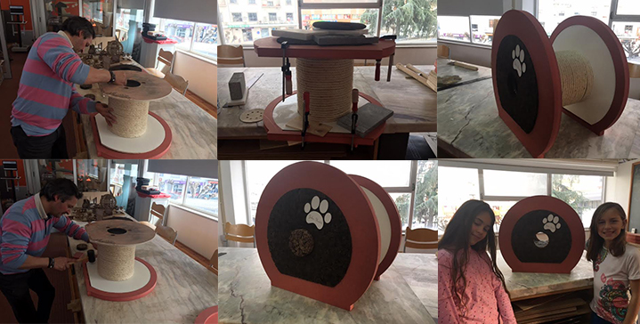
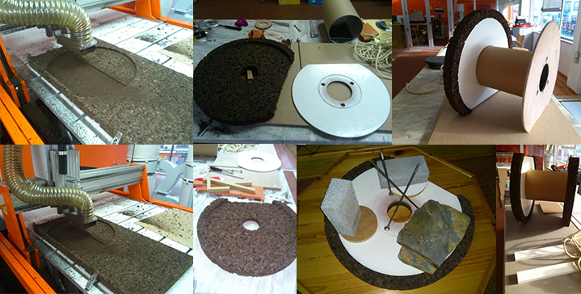
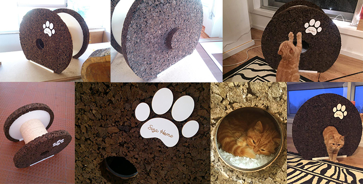
Final Result
Two C.A.T'S houses
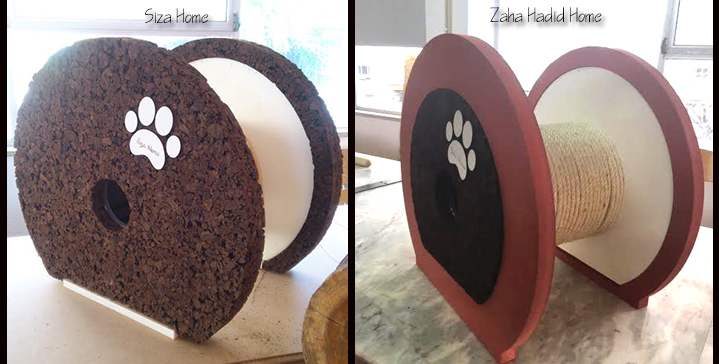
Files: